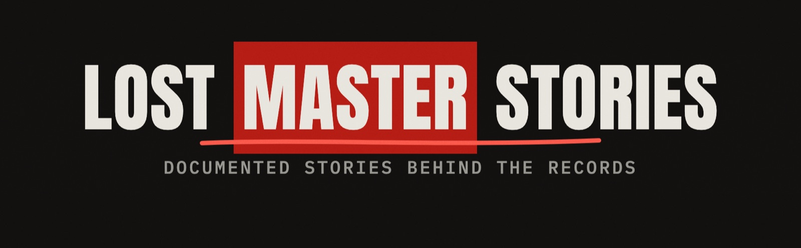

Music history documentaries: the story behind the album, told with archive images and a source for every fact. A new video essay every week, plus daily shorts.
Watch on YouTube → @LostMasterStories
Stories
 Switched-On Bach
Switched-On BachHow we work
Every fact is checked against at least two independent sources, listed under each story. Images and footage come from free archives (Wikimedia Commons, the Library of Congress) with their licenses and credits. Narration is an AI voice.
About this site
This site also hosts the privacy policy and terms of the small internal tool its owner uses to upload their own videos to their own YouTube channels (Lost Master Stories and Stoic Ember) through the YouTube API Services. Contact: rabbiteyes.org@gmail.com